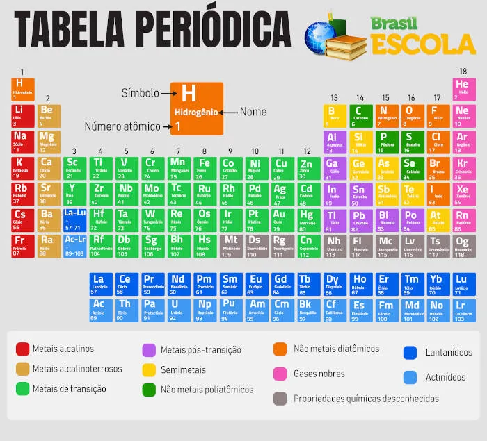

1 Tabela Periódica
1.1 HISTÓRIA DA TABELA PERIÓDICA
A tabela periódica é uma ferramenta projetada para facilitar a categorização,organização e agrupamento de todos os elementos químicos conhecidos e suas propriedades. Até chegar ao modelo atual, muitos cientistas criaram tabelas mostrando como os elementos químicos eram formados. E em 1869, o químico russo Dmitry Mendeleev (1834-1907) desenvolveu a tabela periódica mais completa baseada nas massas atômicas dos elementos. Mendeleev classificou os elementos em grupos com propriedades parecidas, reservando espaços em branco para aqueles que ele previu que seriam descobertos mais ao longo dos anos até sua forma atual (BATISTA, 2023).
1.1.1 Henry Moseley
Em 1913, o físico inglês Henry Moseley melhorou a tabela periódica após seu método para determinar os números atômicos. A partir de então, os elementos foram colocados em ordem crescente de número atômico, assumindo a forma que conhecemos hoje. Em comemoração aos 150 anos da criação da tabela periódica a Organização das nações Unidas declarou 2019 o Ano Internacional da Tabela Periódica, em homenagem a um dos avanços mais influentes e importantes da ciência (BATISTA, 2023).
1.1.2 William Ramsay
William Ramsay é o responsável pelo descobrimento dos elementos Neônio, argônio, criptônio e xenônio, que juntamente com o hélio e o radônio formam a família dos gases nobres da tabela periódica (BATISTA, 2023).
1.1.3 Glenn Seaborg
Glenn Seaborg, por sua vez, descobriu os elementos transurânicos numerados de 94 a 102 e ajudou a reorganizar a tabela periódica em 1944 ao colocar a série dos actinídeos abaixo da série dos lantanídeos (BATISTA, 2023).
1.2 ORGANIZAÇÃO DA TABELA PERIÓDICA
A tabela periódica é muito útil porque consegue estabelecer um padrão organizador para todos os elementos químicos descobertos até agora.. No entanto, uma das grandes vantagens da tabela periódica é a colocação de elementos com propriedades físico-químicas semelhantes na mesma coluna. Existem atualmente 118 elementos químicos (92 naturais e 26 artificiais) dispostos na tabela em ordem crescente de números atômicos (número de prótons), da esquerda para a direita, começando com o hidrogênio (número atômico igual a 1) e terminando com o recém adicionado oganessônio (número atômico igual a 118) (NOVAIS, 2023).
Figura 1 - Tabela periódica
1.2.1 Grupo (ou família)
A Tabela Periódica contém 18 linhas ou colunas verticais, que são consideradas como famílias ou grupos. Em cada coluna temos elementos de propriedades físico-químicas semelhantes, a única exceção é o elemento químico hidrogênio, que, apesar de estar no primeiro grupo, não possui propriedades semelhantes aos outros (NOVAIS, 2023).
1.2.2 Períodos
Períodos são as linhas horizontais da tabela periódica que organizam os elementos em ordem crescente de número atômico. Atualmente, a tabela tem sete períodos. Eles indicam qual camada é o elemento eletrônico mais energético correspondente à substância química. Um detalhe significativo são os Lantanídeos e os Actinídeos. Existem outras divisões na tabela periódica, como a divisão entre metal e ametal (NOVAIS, 2023).
REFERÊNCIAS
BATISTA, Carolina. Tabela Periódica .Toda Matéria. Disponível em https://www.todamateria.com.br/tabela-periodica/. Acesso em: 3 abr. 2023.
NOVAIS, Araújo. Tabela Periódica .Brasil Escola. Disponível em https://brasilescola.uol.com.br/quimica/tabela-periodica.htm. Acesso em: 3 abr. 2023.